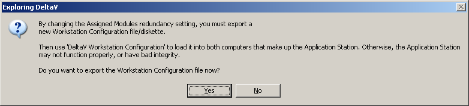
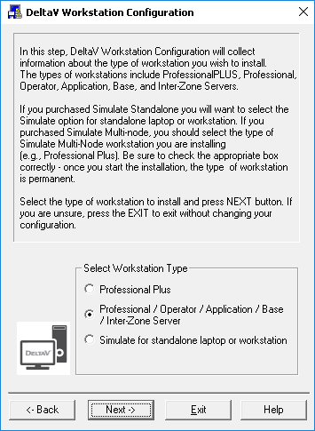
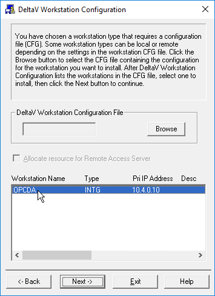
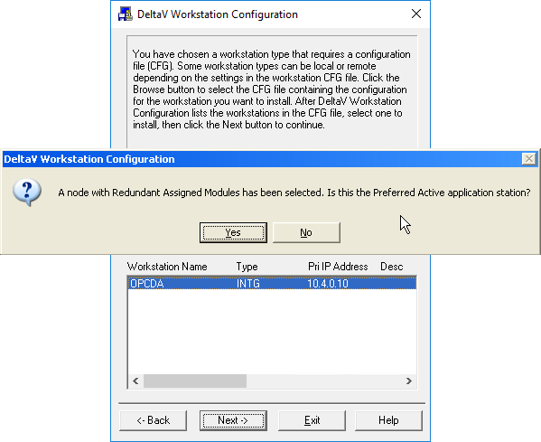

In DeltaV Explorer on the ProfessionalPLUS workstation,
right-click one of the existing pair of Application Stations that you intend to
use for running an OPC client connected to a redundant DeltaV OPC Data Access
Server.
Click
Delete on the shortcut menu for the
Application Station, and then click
Yes when prompted to confirm that you want to
delete this Application Station from the Control Network.
In DeltaV Explorer, right-click the remaining Application Station
that you intend to use for running an OPC client connected to a redundant
DeltaV OPC Data Access Server.
Click
Properties on the shortcut menu for the
Application Station. You can optionally change the name of the Application
Station on the
General tab of the
Properties dialog, but this is not necessary.
However, changing the Application Station name is strongly recommended if it
coincidentally ends with the characters _S.
Important: As a general rule, do not specify an
Application Station name that ends with the characters _S. When the DeltaV
system creates a pair of Application Stations for redundant DeltaV OPC Data
Access Server, it appends these characters to whatever name you specify as the
base name for the Application Station. Having a pair of Application Stations
named
nodename_S and
nodename_S_S could result in misleading or undesirable
results while working with redundant DeltaV OPC Data Access Server.
On the
Redundancy tab of the
Properties dialog, check the
Enable a redundant subsystem option, select
the
Assigned Modules option, and then select
either the
OPC Data Access Server option or the
OPC Data Access Server and OPC Mirror option.
Important: You cannot enable redundant DeltaV OPC Data
Access Server on a pair of Application Stations if you have already enabled any
other subsystems, such as Batch Executive, Batch Historian, Continuous
Historian, Campaign Manager, Alarms and Events, or Remote Network, for this
Application Station. To enable redundant DeltaV OPC Data Access Server on a
pair of Application Stations, you must first disable any previously-enabled
assigned modules for this Application Station.
Enabling redundant DeltaV OPC Data Access Server
You can optionally enable the
Unattended Workstation Reboot on Failover or Manual
Switchover option, if either of the Application Stations will be
located in an unmanned facility, for example.
Click
OK to close the
Properties dialog for the Application Station.
When prompted to export a workstation configuration file for the
Application Station, click
Yes. Save the workstation configuration file
either to removable media or to a network location that can be accessed from
the Application Station you are configuring. You can use the default name for a
workstation configuration file, DevData.cfg, or specify a different file name.

On the Application Station that you did not delete in DeltaV
Explorer, import the workstation configuration file by clicking
Start > DeltaV
Installation > DeltaV Workstation
Configuration on the
Start menu.
When the introductory
DeltaV Workstation Configuration dialog appears,
click
Next.
For the
Select Workstation Type option, select
Professional / Operator / Application / Base / Inter-Zone
Server, and then click
Next.
Specifying the type of workstation

When prompted to provide the workstation configuration file that
you made earlier on the ProfessionalPLUS workstation, click
Browse, navigate to the exported workstation
configuration file, and double-click it.
Importing the workstation configuration file


Select the workstation name, and then click
Next.
The following message appears:
A node with Redundant Assigned Modules has been selected. Is this
the preferred active Application Station? It is recommended that you
respond to this prompt by clicking
Yes when configuring the first of the two
Application Stations. When you click
Yes, the Application Station is given the name
specified for it in DeltaV Explorer.
Follow the on-screen instructions to complete the configuration of
the Application Station.
Note: If you ever need to reconfigure either workstation
in the pair, you should respond to this prompt by clicking
Yes if it is the Application Station that
you specified as the preferred active; otherwise, click
No, if it is the workstation with the
characters _S appended to the base Application Station name.